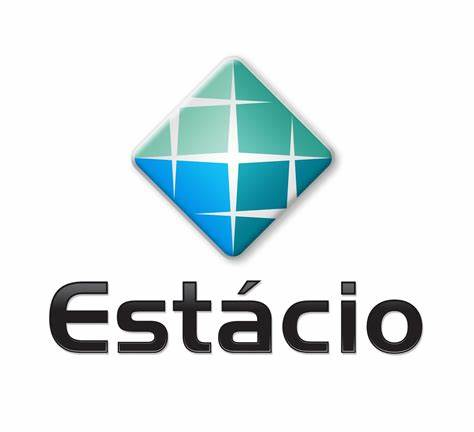
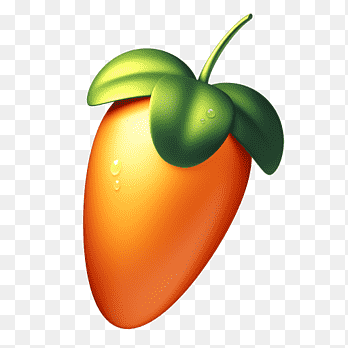
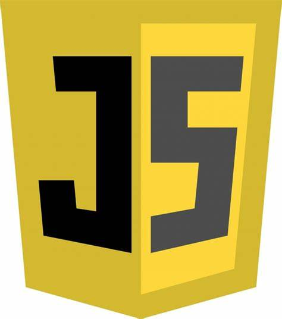
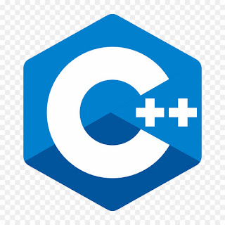
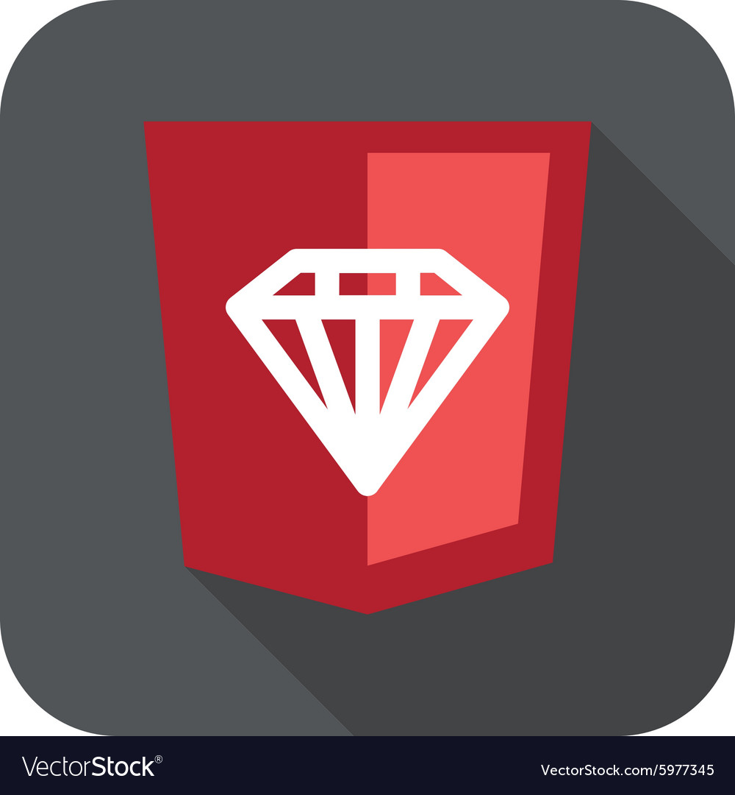

.jpeg) FAM
FAMGuilherme Barbosa da Silva sou estudante de Dev Full-Stack na FIA e Engenharia de Software na

EstácioTambém curso Educação Fisíca Bacharelado na FAM
Estou aprendendo sobre Lógica da Programação e Desenvolvimento Full-Stack

Produzo beats no FLSTUDIO um software mais usado para criação de musicas e instrumentais.
Se quiser acompanhar minhas criações siga para minha 2ªPágina
| Cronograma | |||||||||||||||||||
| NEW | |||||||||||||||||||
| Horarios | |||||||||||||||||||
| NEW | |||||||||||||||||||
| 05:00 AM | 06:00 AM | 07:00 AM | 08:00 PM | 09:00 AM | 10:00 AM | 11:00 AM | 12:00 AM | 13:00 PM | 14:00 PM | 15:00 PM | 16:00 PM | 17:00 PM | 18:00 PM | 19:00 PM | 20:00 PM | 21:00 PM | 22:00 PM | 23:00 PM | 00:00 PM |
| NEW | |||||||||||||||||||
| Atividades | |||||||||||||||||||
| NEW | |||||||||||||||||||
| Acordar | Preparar café | Academia | Treinar | Voltar | Banho | Almoçar | Estudar | Praticar | Meditar | Trabalho | Intervalo | Trabalho | Voltar | Banho | Jantar | Estudar | Praticar | Dormir | |
| NEW | |||||||||||||||||||
| Status | |||||||||||||||||||
| NEW | |||||||||||||||||||
| Legal | Otimo | Ok | Vamos lá | Lets go | Very nice | Very good | Good Job | Push | First | Second | True | Right Now | Good | Nice | Maravilha | Mais ou menos | Okay | Paz | |
| NEW | |||||||||||||||||||
| FIM | |||||||||||||||||||
 Missão
Missão Valores
Valores VisãoMissãoValoresVisão
VisãoMissãoValoresVisão Python
Python
Javascript Java
Java
C++
RUBY| Arquitetura Computacional |
| Comunicação e interação entre o Software e o Hardware |
| Python |
| Linguagem Multiparadigma sendo estruturada e orientada á objetod |
| Desenvolvimento de Software |
| Estrutura do Software e gerenciamento de projetos |
| Segurança da Informação |
| Proteção de dados com criptografia e Segurança contra ataques cibernéticos realizados por hacker |
| Matemática e Lógica |
| Calculos e operações aritméticas usadas nas linguagens de programação |
| Sistemas e Sociedade |
| Tecnologia da Informação é influenciada pelas dinâmicas sociais,culturais e éticas |
| Pensamento Computacional |
| Forma analitica de se pensar ultilizando o raciocínio lógico da Programação |
| Dev WEB |
| Criação de páginas utilizando tanto o desenvolvimento front-end como o back-end |
| FIM |
| Primeiros Socorros |
| Ações Imediatas a serem tomadas para socorrer acidentes |
| Manifestações Culturais |
| Tipos diferentes de culturas e etnias que são praticadas por povos |
| Dimensões Culturais |
| Efeitos da cultura de uma sociedade sobre os valores dos seus membros |
| Praticas Educacionais |
| Teoria aplicada na pratica causando um impacto social |
| Desenvolvimento Motor |
| Processo pelo qual as habilidades motoras de uma pessoa se desenvolvem e progridem ao longo do tempo |
| Pedagogia do Esporte |
| Ciência que estuda a intervenção do processo de ensino, treinamento e aprendizagem, além da vivência do esporte. |
| Recreação e Lazer |
| Criação de atividades para serem praticadas no tempo livre |
| FIM |
| Comportamento Organizacional |
| Atitudes e comportamentos dos indivíduos e grupo dentro da organização |
| Banco de Dados |
| Sistemas para armazenamento, organização e gerenciamento de dados |
| Big Data em Python |
| Manipulação,análise e visualização de grandes volumes de dados |
| Modelagem de Processos |
| Técnica de representar,analisar e melhorar os processos de negócio |
| Gerenciamento de Projetos |
| Planejamento,execução e controle de projetos para atingir objetivos |
| Métodos Quantitativos |
| Uso de técnicas matemáticas,estatísticas e algorítmicas para á analise de dados |
| Sistemas Operacionais |
| Software que gerencia o hardware do computador e fornece serviços para programas de aplicação |
| FIM |
| Aprendizagem Motora |
| Processo pelo qual os individuos adquirem e refinam habilidades motoras |
| Cinesiologia |
| Estudo do movimento humano,incluindo princípios mecânicos e anatômicos |
| Morfologia |
| Estrutura da forma dos organismos suas partes internas e externas |
| Antropologia |
| Estudo das culturas humanas,seus comportamentos evoluções e interações sociais |
| Bioquímica |
| Estudo dos processos químicos e substâncias que ocorrem dentro dos organismos vivos |
| Fisiologia geral |
| Estudo das funções e processos vitais dos organismos vivos |
| FIM |
| Certificados | ||||
| NEW | ||||
| HTML | HTML e CSS | LGPD | Segurança da Informação | Historico |
| NEW | ||||
| NEW | ||||
| Baixe aqui | Baixe aqui | Baixe aqui | Baixe aqui | Baixe aqui |
| NEW | ||||
| FIM | ||||


.jpeg)